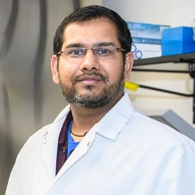

The people behind the work
Statistical geneticists, bioinformaticians and molecular biologists working together on lupus genetics.
Swapan K. Nath, Ph.D.
Professor, Arthritis & Clinical Immunology Research Program
- William H. & Rita Bell Chair in Biomedical Research, Oklahoma Medical Research Foundation
- Adjunct Professor, Departments of Pediatrics and Pathology, University of Oklahoma Health Campus
Dr. Nath's research centres on the genetic and molecular mechanisms behind systemic lupus erythematosus. His laboratory uses genetic epidemiology tools, including linkage analysis, genome-wide association studies, admixture mapping and meta-analysis, to find susceptibility genes in large family collections and case-control cohorts from diverse backgrounds. These scans have helped pinpoint lupus genes including ITGAM, CDKN1B, NCF2 and KLF2.
In the post-GWAS era, the lab combines genomic, epigenomic and functional methods, including 3D chromatin assays and CRISPR/Cas9 editing, to find out how lupus-associated variants change their target genes and regulatory networks.
Current team
Lily Wong, Ph.D.
Staff Scientist

Manish Kumar Singh, Ph.D.
Associate Staff Scientist
Muhammad Adeel, Ph.D.
Assistant Staff Scientist
Alsamman M. Alsamman, Ph.D.
Assistant Staff Scientist
Khushbu Raval
Research Technician II
Louise Williamson
Finance & Administrative Specialist
Interested in joining?
We welcome enquiries from people interested in lupus genetics, functional genomics and computational biology.
Get in touch